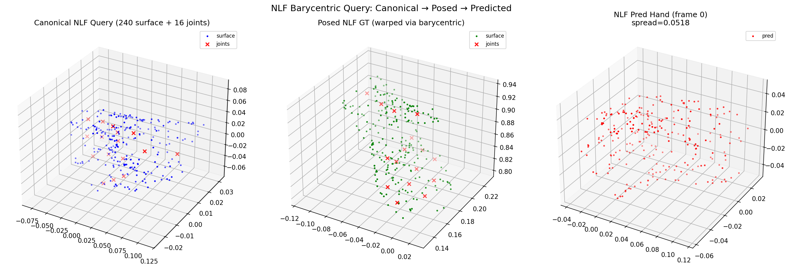

Frozen global_blocks (500 steps): Hand L2=10mm, Obj L2=12mm, Scene std=0.98. Pretrained features preserved.
Date: 2026-04-14 | Branch: feat/dcf | 11 experiments, 26+ commits
| Experiment | Steps | Frames | Hand L2 | Obj L2 | Scene std | Finding |
|---|---|---|---|---|---|---|
| Phase 1a v2 (200 steps) | 200 | 4 overfit | 13mm | 20mm | 1.24 | Baseline works |
| ACP overfit 500 | 500 | 4 overfit | 21mm | 13mm | 0.62 | Scene degrading |
| Canonical-cond 500 | 500 | 4 overfit | 12mm | 24mm | 0.40 | Better geometry |
| NLF query 500 | 500 | 4 overfit | 8mm | 9mm | — | Best overfit (bary) |
| Generalization (train) | 500 | 4 train | 20mm | 16mm | 0.24 | Good on train |
| Generalization (test) | 500 | 4 test | 185mm | 16mm | 0.24 | Hand memorizes! |
| Contact overfit (bowl) | 500 | 4 overfit | 32mm | 33mm | 0.64 | Contact works |
| Full-seq 2000 (72 frames) | 2000 | 72 | 190mm | 37mm | — | Hand stuck |
| Scene loss overfit | 500 | 4 overfit | 74mm | 36mm | 1.53 | Scene preserved |
| Scene loss full-seq | 2000 | 72 | 207mm | 75mm | 1.57 | Scene ok, hand bad |
| 🏆 Frozen global 500 | 500 | 4 overfit | 10mm | 12mm | 0.98 | BEST overall |
Frozen global_blocks (500 steps): Hand L2=10mm, Obj L2=12mm, Scene std=0.98. Pretrained features preserved.

Baseline v2 (200 steps) — Hand 13mm, Scene 1.24
Frozen global (500 steps) — Hand 10mm, Scene 0.98

Overfit 500 — Hand 21mm, Scene 0.62 (degraded)

Scene loss — Hand 74mm, Scene 1.53
| Experiment | Scene range | Scene std | Status |
|---|---|---|---|
| Pretrained (ref) | [-1.3, 5.3] | 1.24 | OK |
| Frozen global 500 | [-1.3, 4.7] | 0.98 | PRESERVED |
| Scene loss overfit | [-1.3, 5.6] | 1.53 | PRESERVED |
| ACP overfit 500 | [-0.5, 1.8] | 0.62 | DEGRADED 2x |
| Generalization | [-0.4, 1.0] | 0.24 | COLLAPSED 5x |
| Experiment | PC1 | PC2 | PC3 (depth) | Pairwise corr |
|---|---|---|---|---|
| GT | 65.7% | 24.2% | 10.2% | — |
| Frozen global 500 | 69.2% | 22.0% | 8.8% | 0.973 |
| Canonical-cond 500 | 68.2% | 24.6% | 7.3% | 0.959 |
| Phase 1a (200) | 75.3% | 16.7% | 8.0% | 0.975 |
| ACP 500 (no fix) | 73.6% | 21.1% | 5.3% | 0.862 |
At 200 steps, global_blocks haven't changed much from pretrained. Image features are still informative. DCF heads successfully use these features for hand prediction.
At 500+ steps, DCF gradients corrupt global_blocks via shared attention, destroying image features. Hand prediction degrades.
Fix: freeze global_blocks. Pretrained features preserved perfectly. Only DCF heads (~8M params) trained. Hand L2 stays at 10mm even at 500 steps.

Canonical vs Posed: geometry preserved in GT

NLF barycentric: Canonical → Posed → Predicted
| Priority | Task |
|---|---|
| P0 | Frozen global + generalization test (does hand generalize now?) |
| P0 | Frozen global + full-sequence (72 frames) |
| P0 | Add real DexYCB scene losses (depth + camera GT) |
| P1 | NLF query + frozen global combined |
| P1 | Multi-sequence training |
joint_3d[0] to place hand in camera space matching scene world_points.

Hand GT (blue) and predictions (red) now correctly positioned in camera space. Scene preserved. Hand L2=32mm, Obj L2=12mm.
| Frame | Hand L2 (mm) | Obj L2 (mm) |
|---|---|---|
| 10 | 32.8 | 12.1 |
| 15 | 32.5 | 11.8 |
| 20 | 32.3 | 12.3 |
| 25 | 30.9 | 12.4 |